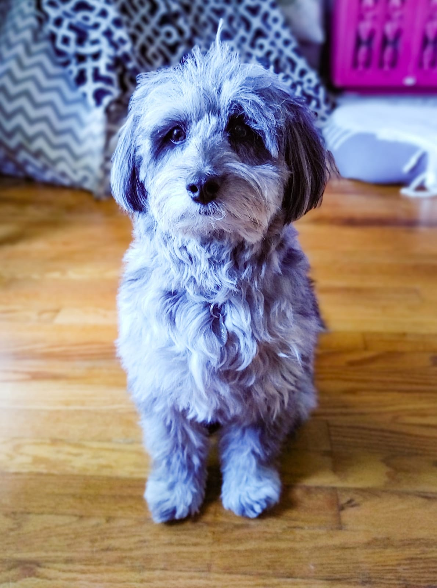
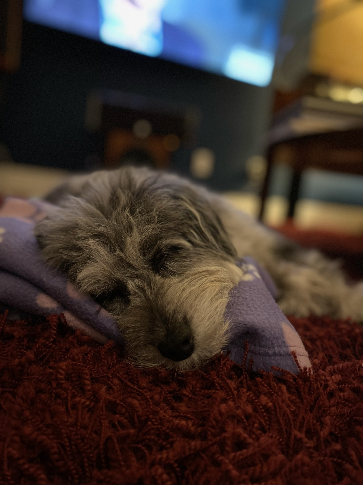
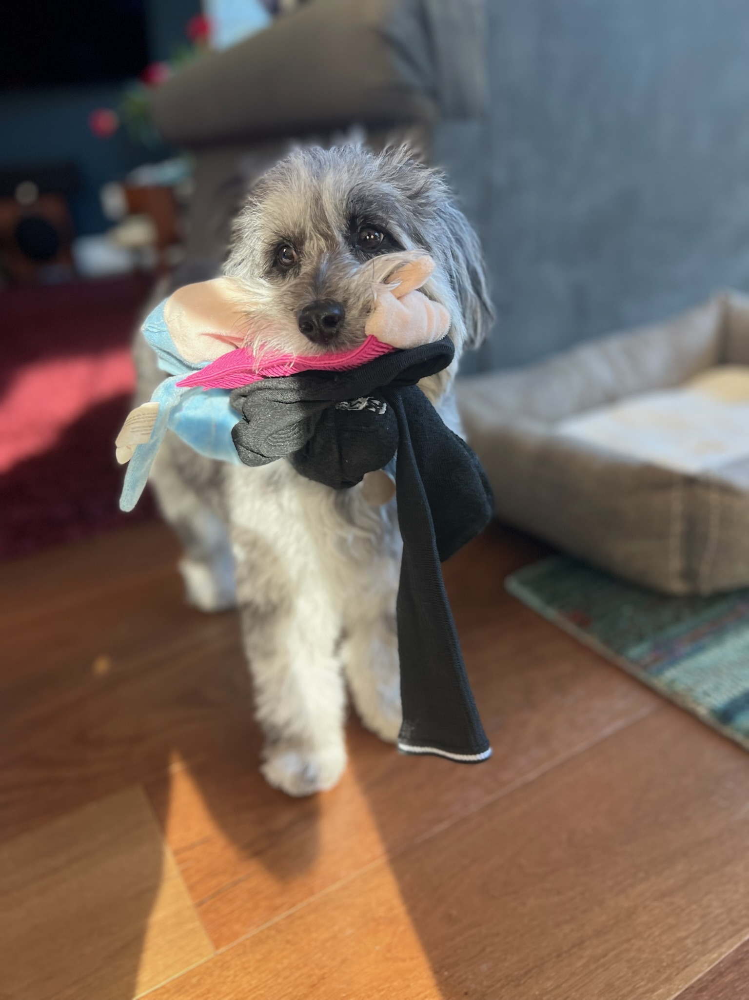
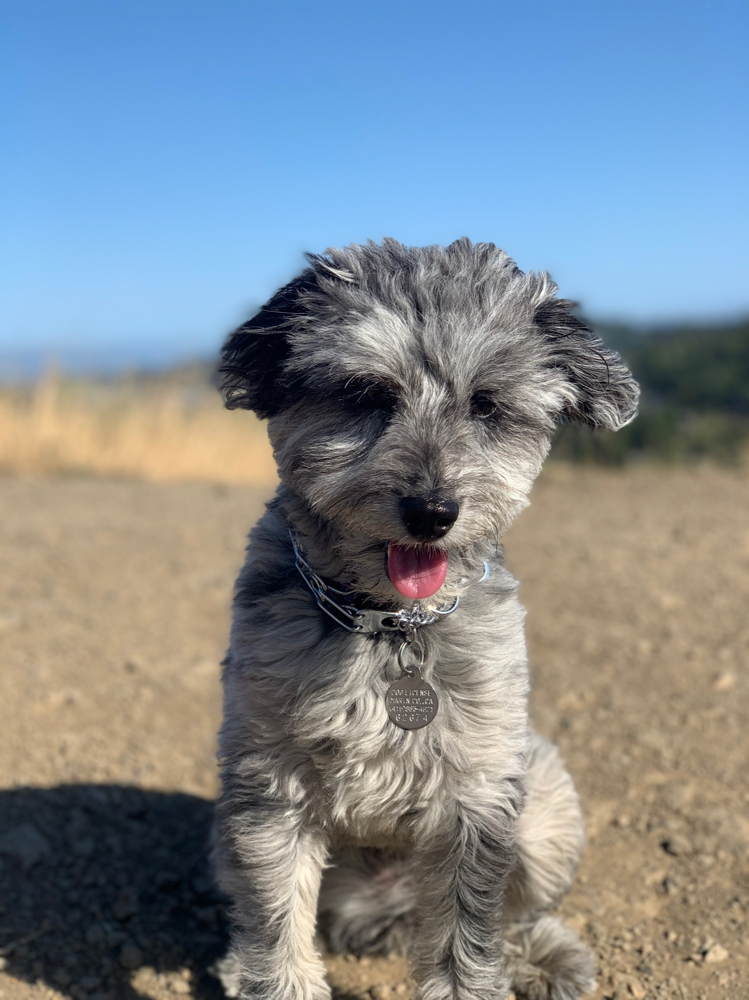
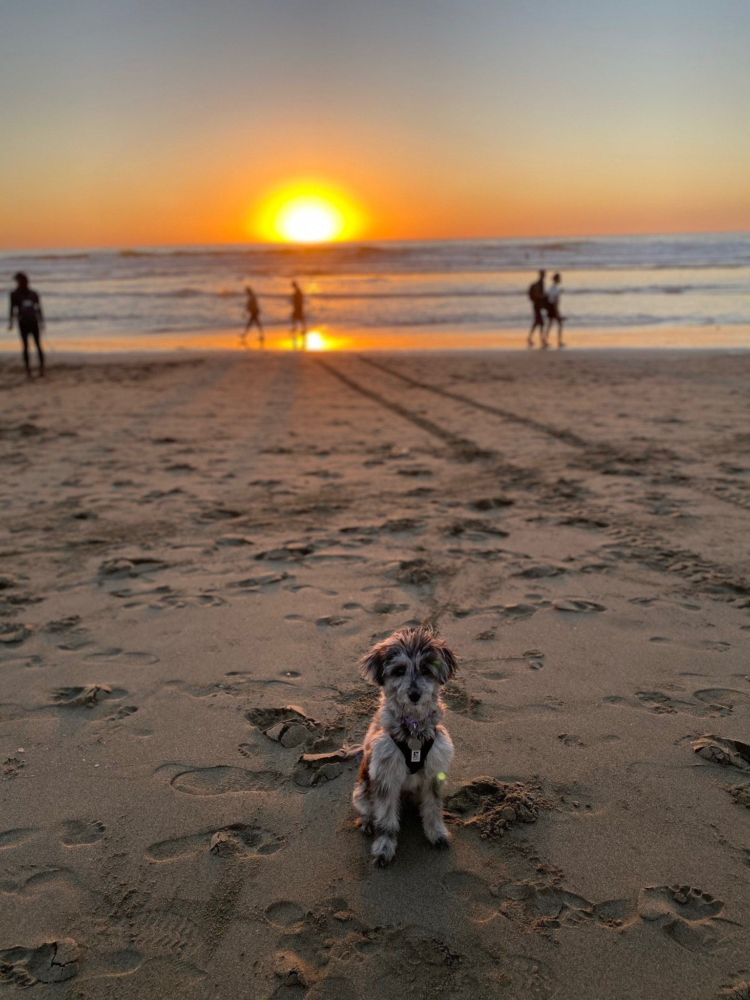

This is the personal website of Kaya Blue, a 1 year old Aussiedoodle living in California

Check out these pictures of me, aren't I cute!

When I go on long walks I get very sleepy, luckily I have my mother's blanket to keep me company

I like to play the game "how many socks can I fit in my mouth"

Sometimes, when my hair is long, the wind blows it all over the place

My favorite place in the world is the beach!
Kaya really is the cutest dog. She's incredibly smart, like most Aussiedoodles and she is extremely empethetic. She is also so playful and happy. I like to call her my kangaroo since she loves to jump and can jump much higher than one would expect for a 14 pound dog.
-Dylan Solomon, Owner
Sign up to pet me!
Sign up today to join the wait list to play fetch with me, pet me, and take me for a long walk!